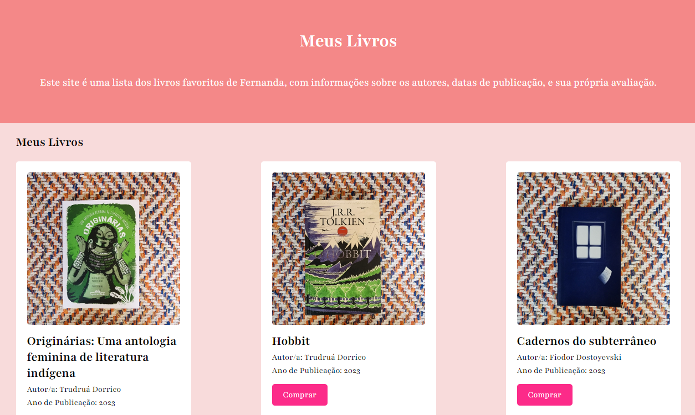

Meus projetos

Minha biblioteca: uma webpage personalizada
Este projeto é uma página web que apresenta uma lista dos meus livros favoritos,incluindo informações sobre os autores, datas de publicação e links para compra na Amazon. A página é estilizada com CSS para uma visualização agradável e usa fontes externas no Google Fonts.

Decidindo o futuro: Uma Jornada Interativa sobre a Inteligência Artificial
Este projeto é um jogo interativo baseado em navegador que explora o impacto e as implicações da Inteligência Artificial (IA) na sociedade, permitindo que as pessoas jogadoras façam escolhas que influenciam o desenrolar de uma narrativa sobre o futuro da IA.

Explorando o Universo: Uma Aventura Interativa em Astronomia com Scratch
Este projeto Scratch cria uma experiência interativa educativa sobre astronomia, permitindo aos usuários explorar informações sobre constelações, eclipses, e a forma da terra através de cenários dinâmicos e diálogos informativos.